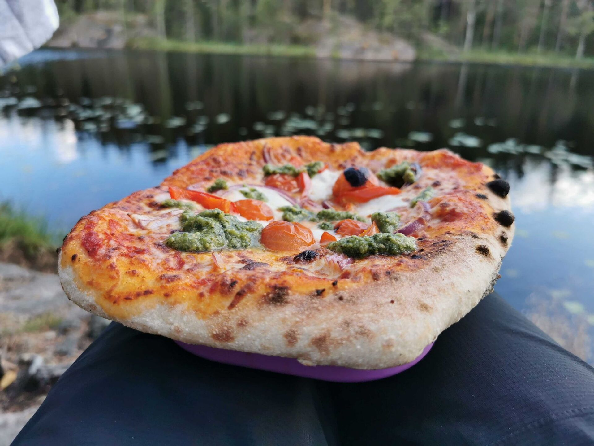

Yhteystiedot
Moikataan!
Kysy rohkeasti – vastaamme mielellämme partioon liittyviin kysymyksiin.
Lippukunnan yhteystiedot
Ota yhteyttä
Ohessa lippukuntamme tärkeät nimet ja numerot. Sivun alalaidasta löydät myös piirin ja keskusjärjestön yhteystiedot.
Hannu Korhonen
050 442 0972
Lippukunnan osoite ja pankkiyhteys
- Nimi
- Partiolippukunta Espoon Leppäversot ry
- Käyntiosoite
- Valotalo
Matinkartanontie 13 A, 02230 Espoo - Tilinumero
- FI37 5789 8520 0240 91
- Y-tunnus
- 3061849-3
Osa suurempaa
Partio Suomessa ja maailmalla
Lippukuntamme kuuluu Pääkaupunkiseudun Partiolaisten alueelliseen partiopiiriin, joka puolestaan on osa Suomen Partiolaisten keskusjärjestöä. Kaikki maailman partiolaiset kuuluvat myös maailmanjärjestöihimme WAGGGSiin sekä WOSMiin. Suomessa on myös ruotsinkielisten lippukuntien partioliitto FiSSc.